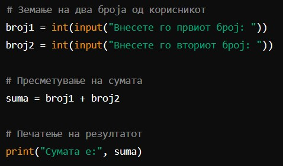
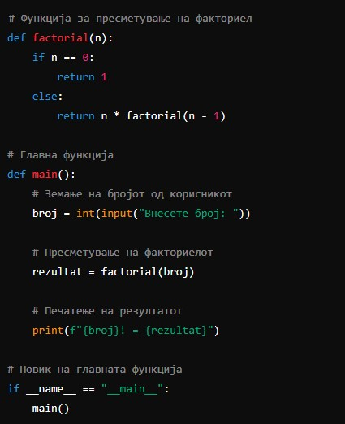

Python е високо ниво, интерпретиран програмски јазик, познат по својата едноставност и лесна за читање синтакса. Python брзо стекна популарност поради својата способност за поддршка на повеќе програмски парадигми, како што се објектно-ориентирано, императивно, и функционално програмирање.
Клучни карактеристики на Python вклучуваат:
Едноставност: Python има чиста и разбирлива синтакса, што го прави лесен за учење и користење.
Мултиплатформска поддршка: Работи на различни оперативни системи, вклучувајќи Windows, macOS и Linux.
Голема стандардна библиотека: Python доаѓа со обемна стандардна библиотека која покрива многу програмски задачи.
Динамичка типизација: Променливите не мора да бидат декларирани со тип на податок, што овозможува флексибилност во кодирањето.
Опширна заедница и ресурси: Python има огромна заедница која обезбедува поддршка преку форуми, туторијали и документација.
Со својата лесна употреба и големата поддршка, Python е избор за многу програмери, како почетници така и професионалци, за развој на веб-апликации, научни и инженерски анализи, вештачка интелигенција и многу други области.
Започнувањето со Python е релативно лесно поради неговата едноставна синтакса и обемната поддршка на заедницата. Еве неколку чекори кои ќе ви помогнат да започнете:
Инсталирање на Python:
Преземете и инсталирајте ја најновата верзија на Python од официјалната страница. Инсталерот автоматски ќе додаде Python во вашата патека (PATH), што значи дека ќе можете да го користите од командната линија.
Инсталирање на интегрирана развојна средина (IDE):
Изберете IDE како PyCharm, Visual Studio Code, или Jupyter Notebook. Овие алатки нудат авто-комплетирање, дебагирање и други корисни функции.
Запознавање со основите:
Научете ги основните концепти на Python како синтакса, променливи, типови на податоци, условни изрази, циклуси, и функции.
Праксата е клучна, па започнете со мали програми и задачи за да го примените наученото.
Практични проекти и вежби:
Учествувајте во мали проекти за да го примените знаењето во реални ситуации.
Посетувајте кодинг платформи како LeetCode, HackerRank, или Codewars за решавање на алгоритамски задачи и вежби.
Со следење на овие чекори, можете успешно да започнете со учење на Python и постепено да го подобрите вашето знаење и вештини во овој популарен и моќен програмски јазик.
Започнете со Hello World:
Најдобар начин да започнете со Python е да напишете “Hello World!” програма. Оваа програма е многу едноставна и ќе ви помогне да се запознаете со синтаксата на Python. Во избраниот текст едитор или IDE, напишете го следниот код и зачувајте го како myfirstprogram.py:

Пресметување на сума. Како следен чекор, напишете програма која ќе пресметува сума на два броја. Во следниот пример, користиме влез од корисникот:
Пресметување на факториел - Напишете програма која ќе го пресметува факториелот на даден број. Во следниот пример, користиме рекурзија:
